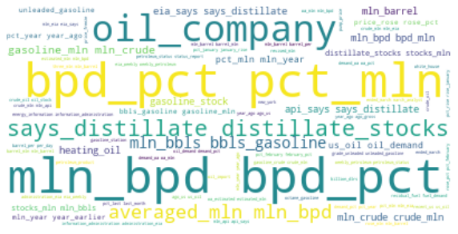
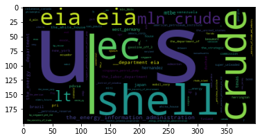
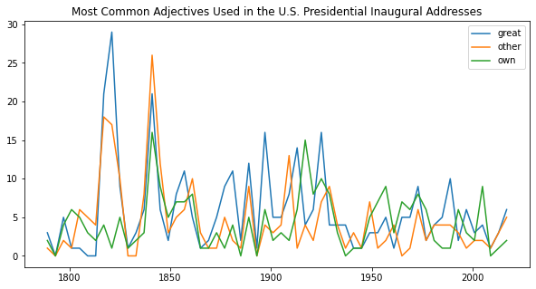

%matplotlib inline
from collections import Counter
from datetime import datetime, timedelta
from dotenv import find_dotenv, get_key
import json
import re
import numpy as np
import pandas as pd
from pylab import mpl, plt
import seaborn as sns
plt.style.use('seaborn-whitegrid')
plt.rcParams['figure.figsize'] = (10, 6)
from sklearn.feature_extraction.text import CountVectorizer, TfidfVectorizer
import alpaca_trade_api as tradeapi
alpaca_api_key = 'PKKSFLVI3BMIRQBN6C2K'
alpaca_secret_key = 'sW1fFZmq9HZwyL5p6OkFrJbr2TFq1H5IJ2njVLik'
api = tradeapi.REST(alpaca_api_key, alpaca_secret_key, api_version='v2')
from newsapi import NewsApiClient
#from newsapi.newsapi_client import NewsApiClient
api_key = '87dec3a300674a8a87b91a1da6ab30be'
newsapi = NewsApiClient(api_key=api_key)
import nltk
from nltk.corpus import inaugural, reuters, stopwords
#stopwords.words('english')
from nltk.sentiment.vader import SentimentIntensityAnalyzer
from nltk.stem import WordNetLemmatizer
from nltk.tokenize import sent_tokenize, word_tokenize
from nltk.util import ngrams
from wordcloud import WordCloud
from ibm_watson import ToneAnalyzerV3
from ibm_cloud_sdk_core.authenticators import IAMAuthenticator
tone_api = '0R866-tePJfMWni9gl454-jWDOS44kvX12Te4KZFe6Wr'
tone_url = 'https://api.us-east.tone-analyzer.watson.cloud.ibm.com/instances/fc8d2c71-5116-43ab-8c9a-de4a584aa663'
import spacy
from spacy import displacy
nlp = spacy.load('en_core_web_sm')
NLP Natural Language Processing
Preprocessing
Tokenization
Lemmatization
Stopwording
Extraction
Analysis
Representation
Frequency Analysis
Counting tokens
Ngram
Word Cloud
Text Modeling
Sentiment Analysis
Tone Analysis
https://docs.python.org/3/library/re.html
https://spacy.io/api/data-formats
https://spacy.io/api/data-formats#pos-tagging
reuters.categories()
['acq',
'alum',
'barley',
'bop',
'carcass',
'castor-oil',
'cocoa',
'coconut',
'coconut-oil',
'coffee',
'copper',
'copra-cake',
'corn',
'cotton',
'cotton-oil',
'cpi',
'cpu',
'crude',
'dfl',
'dlr',
'dmk',
'earn',
'fuel',
'gas',
'gnp',
'gold',
'grain',
'groundnut',
'groundnut-oil',
'heat',
'hog',
'housing',
'income',
'instal-debt',
'interest',
'ipi',
'iron-steel',
'jet',
'jobs',
'l-cattle',
'lead',
'lei',
'lin-oil',
'livestock',
'lumber',
'meal-feed',
'money-fx',
'money-supply',
'naphtha',
'nat-gas',
'nickel',
'nkr',
'nzdlr',
'oat',
'oilseed',
'orange',
'palladium',
'palm-oil',
'palmkernel',
'pet-chem',
'platinum',
'potato',
'propane',
'rand',
'rape-oil',
'rapeseed',
'reserves',
'retail',
'rice',
'rubber',
'rye',
'ship',
'silver',
'sorghum',
'soy-meal',
'soy-oil',
'soybean',
'strategic-metal',
'sugar',
'sun-meal',
'sun-oil',
'sunseed',
'tea',
'tin',
'trade',
'veg-oil',
'wheat',
'wpi',
'yen',
'zinc']
def process_text (article):
sw = set(stopwords.words('english'))
sw_addons = {'said', 'sent', 'found', 'including', 'today', 'announced', 'week', 'basically', 'also'}
regex = re.compile('[^a-zA-Z ]')
re_clean = regex.sub('', article)
words = word_tokenize(re_clean)
lemmatizer = WordNetLemmatizer()
lem = [lemmatizer.lemmatize(word) for word in words]
output = [word.lower() for word in lem if word.lower() not in sw.union(sw_addons)]
return output
def process_text_bg (doc):
sw_words = process_text(doc)
bigrams = ngrams(sw_words, 2)
output = ['_'.join(i) for i in bigrams]
return output
def word_counter (corpus):
''' Combine all articles in corpus into one large string. '''
big_string = ' '.join(corpus)
processed = process_text(big_string)
top_10 = dict(Counter(processed).most_common(10))
return pd.DataFrame(list(top_10.items()), columns=['word', 'count'])
def bigram_counter (corpus):
''' Combine all articles in corpus into one large string. '''
big_string = ' '.join(corpus)
processed = process_text(big_string)
bigrams = ngrams(processed, n=2)
top_10 = dict(Counter(bigrams).most_common(10))
return pd.DataFrame(list(top_10.items()), columns=['bigram', 'count'])
ids = reuters.fileids(categories='gas')
corpus = [reuters.raw(i) for i in ids]
display(
word_counter(corpus),
bigram_counter(corpus),
)
sentence_tokenized = [sent_tokenize(i) for i in corpus]
word_tokenized = []
for story in sentence_tokenized:
words = []
for sent in story:
words = words + word_tokenize(sent)
word_tokenized.append(words)
reuters_cpi = pd.DataFrame({'articles': corpus,
'sentence_tokenized': sentence_tokenized,
'word_tokenized': word_tokenized})
reuters_cpi.index = ids
reuters_cpi.head()
| word | count | |
|---|---|---|
| 0 | mln | 214 |
| 1 | pct | 135 |
| 2 | gasoline | 113 |
| 3 | oil | 101 |
| 4 | crude | 72 |
| 5 | year | 70 |
| 6 | barrel | 70 |
| 7 | price | 68 |
| 8 | bpd | 56 |
| 9 | would | 48 |
| bigram | count | |
|---|---|---|
| 0 | (mln, barrel) | 53 |
| 1 | (mln, bpd) | 47 |
| 2 | (pct, mln) | 33 |
| 3 | (bpd, pct) | 29 |
| 4 | (crude, oil) | 22 |
| 5 | (mln, eia) | 20 |
| 6 | (year, ago) | 20 |
| 7 | (rose, pct) | 19 |
| 8 | (crude, mln) | 18 |
| 9 | (says, distillate) | 17 |
| articles | sentence_tokenized | word_tokenized | |
|---|---|---|---|
| test/14863 | FINNS AND CANADIANS TO STUDY MTBE PRODUCTION P... | [FINNS AND CANADIANS TO STUDY MTBE PRODUCTION ... | [FINNS, AND, CANADIANS, TO, STUDY, MTBE, PRODU... |
| test/15339 | EIA SAYS DISTILLATE STOCKS UNCHANGED, GASOLINE... | [EIA SAYS DISTILLATE STOCKS UNCHANGED, GASOLIN... | [EIA, SAYS, DISTILLATE, STOCKS, UNCHANGED, ,, ... |
| test/15344 | EIA SAYS DISTILLATE STOCKS UNCHANGED IN WEEK\n... | [EIA SAYS DISTILLATE STOCKS UNCHANGED IN WEEK\... | [EIA, SAYS, DISTILLATE, STOCKS, UNCHANGED, IN,... |
| test/15351 | RECENT U.S. OIL DEMAND OFF 2.6 PCT FROM YEAR A... | [RECENT U.S. OIL DEMAND OFF 2.6 PCT FROM YEAR ... | [RECENT, U.S., OIL, DEMAND, OFF, 2.6, PCT, FRO... |
| test/16581 | EXXON <XON> EXTENDS MID-GRADE UNLEADED MARK... | [EXXON <XON> EXTENDS MID-GRADE UNLEADED MAR... | [EXXON, &, lt, ;, XON, >, EXTENDS, MID-GRADE, ... |
wc = WordCloud(background_color='white').generate(' '.join(process_text(' '.join(corpus))))
plt.figure(figsize=(10, 8));
plt.imshow(wc, interpolation='bilinear');
plt.axis('off');
plt.title('');
plt.figure(figsize=(10, 8));
wc = WordCloud(background_color='white').generate(' '.join(process_text_bg(' '.join(corpus))))
plt.imshow(wc, interpolation='bilinear');
plt.axis('off');
plt.title('');

authenticator = IAMAuthenticator(tone_api)
tone_analyzer = ToneAnalyzerV3(
version='2017-09-21',
authenticator=authenticator,
)
tone_analyzer.set_service_url(tone_url)
text = """
Team, I know that times are tough!
Product sales have been disappointing for the past three quarters.
We have a competitive product, but we need to do a better job of selling it!
"""
tone_analysis = tone_analyzer.tone(
{'text': text},
content_type='application/json',
content_language='en',
accept_language='en',
).get_result()
print(json.dumps(tone_analysis, indent=2))
doc_tone_df = pd.json_normalize(data=tone_analysis['document_tone'], record_path=['tones'])
doc_tone_df
sentences_tone_df = pd.json_normalize(
data=tone_analysis['sentences_tone'],
record_path=['tones'],
meta=['sentence_id', 'text'],
)
sentences_tone_df
utterances = [
{"text": "Hello, I'm having a problem with your product.", "user": "customer"},
{"text": "OK, let me know what's going on, please.", "user": "agent"},
{"text": "Well, nothing is working :(", "user": "customer"},
{"text": "Sorry to hear that.", "user": "agent"},
]
utterance_analysis = tone_analyzer.tone_chat(
utterances=utterances, content_language='en', accept_language='en',
).get_result()
print(json.dumps(utterance_analysis, indent=2))
chat_tone_df = pd.json_normalize(
data=utterance_analysis['utterances_tone'],
record_path=['tones'],
meta=['utterance_id', 'utterance_text'],
)
chat_tone_df
{
"document_tone": {
"tones": [
{
"score": 0.6165,
"tone_id": "sadness",
"tone_name": "Sadness"
},
{
"score": 0.829888,
"tone_id": "analytical",
"tone_name": "Analytical"
}
]
},
"sentences_tone": [
{
"sentence_id": 0,
"text": "Team, I know that times are tough!",
"tones": [
{
"score": 0.801827,
"tone_id": "analytical",
"tone_name": "Analytical"
}
]
},
{
"sentence_id": 1,
"text": "Product sales have been disappointing for the past three quarters.",
"tones": [
{
"score": 0.771241,
"tone_id": "sadness",
"tone_name": "Sadness"
},
{
"score": 0.687768,
"tone_id": "analytical",
"tone_name": "Analytical"
}
]
},
{
"sentence_id": 2,
"text": "We have a competitive product, but we need to do a better job of selling it!",
"tones": [
{
"score": 0.506763,
"tone_id": "analytical",
"tone_name": "Analytical"
}
]
}
]
}
{
"utterances_tone": [
{
"utterance_id": 0,
"utterance_text": "Hello, I'm having a problem with your product.",
"tones": [
{
"score": 0.686361,
"tone_id": "polite",
"tone_name": "Polite"
}
]
},
{
"utterance_id": 1,
"utterance_text": "OK, let me know what's going on, please.",
"tones": [
{
"score": 0.92724,
"tone_id": "polite",
"tone_name": "Polite"
}
]
},
{
"utterance_id": 2,
"utterance_text": "Well, nothing is working :(",
"tones": [
{
"score": 0.997795,
"tone_id": "sad",
"tone_name": "Sad"
}
]
},
{
"utterance_id": 3,
"utterance_text": "Sorry to hear that.",
"tones": [
{
"score": 0.730982,
"tone_id": "polite",
"tone_name": "Polite"
},
{
"score": 0.672499,
"tone_id": "sympathetic",
"tone_name": "Sympathetic"
}
]
}
]
}
| score | tone_id | tone_name | utterance_id | utterance_text | |
|---|---|---|---|---|---|
| 0 | 0.686361 | polite | Polite | 0 | Hello, I'm having a problem with your product. |
| 1 | 0.927240 | polite | Polite | 1 | OK, let me know what's going on, please. |
| 2 | 0.997795 | sad | Sad | 2 | Well, nothing is working :( |
| 3 | 0.730982 | polite | Polite | 3 | Sorry to hear that. |
| 4 | 0.672499 | sympathetic | Sympathetic | 3 | Sorry to hear that. |
def retrieve_docs (terms):
result_docs = []
for doc_id in money_news_ids:
found_terms = [
word
for word in reuters.words(doc_id)
if any(term in word.lower() for term in terms)
]
if len(found_terms) > 0:
result_docs.append(doc_id)
return result_docs
def create_df (news, language):
"""
Transforms the articles into a DataFrame.
Parameters
==========
news [list]: the list of articles
language [string]: specifies the language of the articles
"""
articles = []
for article in news:
try:
title = article['title']
description = article['description']
text = article['content']
date = article['publishedAt'][:10]
articles.append({
'title': title,
'description': description,
'text': text,
'date': date,
'language': language,
})
except AttributeError:
pass
return pd.DataFrame(articles)
crisis_news_en = newsapi.get_everything(q='financial crisis 2008', language='en')
crisis_news_en['totalResults']
crisis_news_fr = newsapi.get_everything(q='financière crise 2008', language='fr')
crisis_news_fr['totalResults']
crisis_en_df = create_df(crisis_news_en['articles'], 'en')
crisis_fr_df = create_df(crisis_news_fr['articles'], 'fr')
crisis_df = pd.concat([crisis_en_df, crisis_fr_df])
crisis_df.tail()
crisis_df.to_csv('./crisis_news_en_fr.csv', index=False, encoding='utf-8-sig')
analyzer = SentimentIntensityAnalyzer()
libra_headlines = newsapi.get_everything(
q='facebook libra',
language='en',
page_size=100,
sort_by='relevancy',
)
libra_sentiments = []
for article in libra_headlines['articles']:
try:
text = article['content']
date = article['publishedAt'][:10]
sentiment = analyzer.polarity_scores(text)
compound = sentiment['compound']
pos = sentiment['pos']
neu = sentiment['neu']
neg = sentiment['neg']
libra_sentiments.append({
'text': text,
'date': date,
'compound': compound,
'positive': pos,
'negative': neg,
'neutral': neu,
})
except AttributeError:
pass
libra_df = pd.DataFrame(libra_sentiments)
cols = ['date', 'text', 'compound', 'positive', 'negative', 'neutral']
libra_df = libra_df[cols]
libra_df.head()
| date | text | compound | positive | negative | neutral | |
|---|---|---|---|---|---|---|
| 0 | 2021-06-23 | LONDON, June 23 (Reuters) - The Bank for Inter... | 0.0258 | 0.034 | 0.000 | 0.966 |
| 1 | 2021-06-23 | LONDON, June 23 (Reuters) - The Bank for Inter... | 0.0258 | 0.034 | 0.000 | 0.966 |
| 2 | 2021-06-07 | The rise of digital currencies could lead to a... | -0.5267 | 0.000 | 0.124 | 0.876 |
| 3 | 2021-06-25 | Employees use an iPhone to demonstrate the App... | -0.1027 | 0.000 | 0.045 | 0.955 |
| 4 | 2021-06-23 | (Kitco News) The Bank for International Settle... | 0.4019 | 0.074 | 0.000 | 0.926 |
categories = ['money-fx', 'money-supply']
all_docs_id = reuters.fileids()
money_news_ids = [
doc
for doc in all_docs_id
if categories[0] in reuters.categories(doc)
or categories[1] in reuters.categories(doc)
]
money_news = [reuters.raw(doc).lower() for doc in money_news_ids]
vectorizer = TfidfVectorizer(stop_words='english')
X = vectorizer.fit_transform(money_news)
money_news_df = pd.DataFrame(
list(zip(vectorizer.get_feature_names(), np.ravel(X.sum(axis=0)))),
columns=['Word', 'Frequency'],
)
money_news_df = money_news_df.sort_values(by=['Frequency'], ascending=False)
money_news_df.head()
top_words = money_news_df[(money_news_df['Frequency'] >= 10) & (money_news_df['Frequency'] <= 30)]
top_words.head()
terms_list = str(top_words['Word'].tolist())
wordcloud = WordCloud(colormap='RdYlBu', background_color='white').generate(terms_list)
plt.imshow(wordcloud, interpolation='bilinear');
plt.axis('off');
plt.title('Money News Word Cloud', fontdict={'fontsize': 20, 'fontweight': 'bold'});
len(retrieve_docs(['yen']))
len(retrieve_docs(['japan', 'banks']))
len(retrieve_docs(['england', 'dealers']))
299
doc_ids = reuters.fileids()
len(doc_ids)
doc_id = 'test/15045'
doc_text = reuters.raw(doc_id)
doc_text
vectorizer = CountVectorizer(stop_words='english')
vectorizer
X = vectorizer.fit_transform([doc_text])
print(X)
words = vectorizer.get_feature_names()
words
words_df = pd.DataFrame(list(zip(words, np.ravel(X.sum(axis=0)))), columns=['Word', 'Word_Count'])
words_df
all_docs_id = reuters.fileids()
corpus_id = all_docs_id[:1000]
corpus = [reuters.raw(doc) for doc in corpus_id]
vectorizer = TfidfVectorizer(stop_words='english')
X_corpus = vectorizer.fit_transform(corpus)
words_corpus = vectorizer.get_feature_names()
words_corpus_df = pd.DataFrame(list(zip(words_corpus, np.ravel(X_corpus.mean(axis=0)))), columns=['Word', 'TF-IDF'])
words_corpus_df = words_corpus_df.sort_values(by=['TF-IDF'], ascending=False)
words_corpus_df
(0, 32) 2
(0, 23) 3
(0, 61) 3
(0, 48) 1
(0, 44) 8
(0, 52) 1
(0, 49) 3
(0, 46) 4
(0, 34) 7
(0, 59) 3
(0, 17) 1
(0, 0) 3
(0, 15) 1
(0, 14) 1
(0, 36) 1
(0, 20) 1
(0, 1) 2
(0, 3) 3
(0, 55) 1
(0, 24) 1
(0, 45) 2
(0, 39) 2
(0, 38) 4
(0, 43) 1
(0, 42) 1
: :
(0, 56) 1
(0, 50) 2
(0, 53) 1
(0, 54) 1
(0, 62) 1
(0, 51) 1
(0, 30) 1
(0, 58) 1
(0, 47) 1
(0, 28) 1
(0, 64) 1
(0, 31) 1
(0, 66) 1
(0, 27) 1
(0, 41) 1
(0, 35) 1
(0, 40) 1
(0, 57) 1
(0, 63) 1
(0, 25) 1
(0, 22) 1
(0, 7) 1
(0, 9) 1
(0, 8) 1
(0, 21) 1
| Word | TF-IDF | |
|---|---|---|
| 9199 | vs | 0.079701 |
| 5885 | mln | 0.061460 |
| 2971 | cts | 0.051221 |
| 1 | 000 | 0.047185 |
| 7680 | said | 0.045466 |
| ... | ... | ... |
| 402 | 302 | 0.000005 |
| 1024 | 893 | 0.000005 |
| 1053 | 927 | 0.000005 |
| 71 | 076 | 0.000005 |
| 7600 | rolled | 0.000005 |
9489 rows × 2 columns
def get_headlines (keyword):
all_headlines = []
all_dates = []
date = datetime.strptime(current_date[:10], '%Y-%m-%d')
end_date = datetime.strptime(past_date[:10], '%Y-%m-%d')
print(f'Fetching news about \'{keyword}\'')
print('*' * 30)
while date > end_date:
print(f'retrieving news from: {date}')
articles = newsapi.get_everything(
q=keyword,
from_param=str(date)[:10],
to=str(date)[:10],
language='en',
sort_by='relevancy',
page=1,
)
headlines = []
for i in range(0, len(articles['articles'])):
headlines.append(articles['articles'][i]['title'])
all_headlines.append(headlines)
all_dates.append(date)
date = date - timedelta(days=1)
return all_headlines, all_dates
def headline_sentiment_summarizer_avg (headlines):
sentiment = []
for day in headlines:
day_score = []
for h in day:
if h == None:
continue
else:
day_score.append(sid.polarity_scores(h)['compound'])
sentiment.append(sum(day_score) / len(day_score))
return sentiment
ticker = 'AAPL'
timeframe = '1D'
current_date = pd.Timestamp(datetime.now(), tz='America/New_York').isoformat()
past_date = pd.Timestamp(datetime.now() - timedelta(30), tz='America/New_York').isoformat()
df = api.get_barset(
ticker,
timeframe,
limit=None,
start=past_date,
end=current_date,
after=None,
until=None,
).df
df.head()
---------------------------------------------------------------------------
HTTPError Traceback (most recent call last)
<ipython-input-13-9b49072d8b0e> in <module>
3 current_date = pd.Timestamp(datetime.now(), tz='America/New_York').isoformat()
4 past_date = pd.Timestamp(datetime.now() - timedelta(30), tz='America/New_York').isoformat()
----> 5 df = api.get_barset(
6 ticker,
7 timeframe,
/opt/anaconda3/lib/python3.8/site-packages/alpaca_trade_api/rest.py in get_barset(self, symbols, timeframe, limit, start, end, after, until)
485 if until is not None:
486 params['until'] = until
--> 487 resp = self.data_get('/bars/{}'.format(timeframe), params)
488 return self.response_wrapper(resp, BarSet)
489
/opt/anaconda3/lib/python3.8/site-packages/alpaca_trade_api/rest.py in data_get(self, path, data, api_version)
190 def data_get(self, path, data=None, api_version='v1'):
191 base_url: URL = get_data_url()
--> 192 return self._request(
193 'GET', path, data, base_url=base_url, api_version=api_version,
194 )
/opt/anaconda3/lib/python3.8/site-packages/alpaca_trade_api/rest.py in _request(self, method, path, data, base_url, api_version)
137 while retry >= 0:
138 try:
--> 139 return self._one_request(method, url, opts, retry)
140 except RetryException:
141 retry_wait = self._retry_wait
/opt/anaconda3/lib/python3.8/site-packages/alpaca_trade_api/rest.py in _one_request(self, method, url, opts, retry)
158 resp = self._session.request(method, url, **opts)
159 try:
--> 160 resp.raise_for_status()
161 except HTTPError as http_error:
162 # retry if we hit Rate Limit
/opt/anaconda3/lib/python3.8/site-packages/requests/models.py in raise_for_status(self)
941
942 if http_error_msg:
--> 943 raise HTTPError(http_error_msg, response=self)
944
945 def close(self):
HTTPError: 403 Client Error: Forbidden for url: https://data.alpaca.markets/v1/bars/1D?symbols=AAPL&start=2021-06-05T11%3A00%3A08.388578-04%3A00&end=2021-07-05T11%3A00%3A08.350417-04%3A00
df = df.droplevel(axis=1, level=0)
df = df.drop(columns=['open', 'high', 'low', 'volume'])
df.index = df.index.date
df.head()
| close | |
|---|---|
| 2021-03-31 | 122.1800 |
| 2021-04-01 | 123.0000 |
| 2021-04-05 | 125.9001 |
| 2021-04-06 | 126.2300 |
| 2021-04-07 | 127.9100 |
aapl_returns = df.pct_change().dropna()
aapl_returns.head()
| close | |
|---|---|
| 2021-04-01 | 0.006711 |
| 2021-04-05 | 0.023578 |
| 2021-04-06 | 0.002620 |
| 2021-04-07 | 0.013309 |
| 2021-04-08 | 0.019232 |
aapl_headlines, dates = get_headlines('apple')
trade_headlines, _ = get_headlines('trade')
economy_headlines, _ = get_headlines('economy')
Fetching news about 'apple'
******************************
retrieving news from: 2021-04-30 00:00:00
retrieving news from: 2021-04-29 00:00:00
retrieving news from: 2021-04-28 00:00:00
retrieving news from: 2021-04-27 00:00:00
retrieving news from: 2021-04-26 00:00:00
retrieving news from: 2021-04-25 00:00:00
retrieving news from: 2021-04-24 00:00:00
retrieving news from: 2021-04-23 00:00:00
retrieving news from: 2021-04-22 00:00:00
retrieving news from: 2021-04-21 00:00:00
retrieving news from: 2021-04-20 00:00:00
retrieving news from: 2021-04-19 00:00:00
retrieving news from: 2021-04-18 00:00:00
retrieving news from: 2021-04-17 00:00:00
retrieving news from: 2021-04-16 00:00:00
retrieving news from: 2021-04-15 00:00:00
retrieving news from: 2021-04-14 00:00:00
retrieving news from: 2021-04-13 00:00:00
retrieving news from: 2021-04-12 00:00:00
retrieving news from: 2021-04-11 00:00:00
retrieving news from: 2021-04-10 00:00:00
retrieving news from: 2021-04-09 00:00:00
retrieving news from: 2021-04-08 00:00:00
retrieving news from: 2021-04-07 00:00:00
retrieving news from: 2021-04-06 00:00:00
retrieving news from: 2021-04-05 00:00:00
retrieving news from: 2021-04-04 00:00:00
retrieving news from: 2021-04-03 00:00:00
retrieving news from: 2021-04-02 00:00:00
retrieving news from: 2021-04-01 00:00:00
Fetching news about 'trade'
******************************
retrieving news from: 2021-04-30 00:00:00
retrieving news from: 2021-04-29 00:00:00
retrieving news from: 2021-04-28 00:00:00
retrieving news from: 2021-04-27 00:00:00
retrieving news from: 2021-04-26 00:00:00
retrieving news from: 2021-04-25 00:00:00
retrieving news from: 2021-04-24 00:00:00
retrieving news from: 2021-04-23 00:00:00
retrieving news from: 2021-04-22 00:00:00
retrieving news from: 2021-04-21 00:00:00
retrieving news from: 2021-04-20 00:00:00
retrieving news from: 2021-04-19 00:00:00
retrieving news from: 2021-04-18 00:00:00
retrieving news from: 2021-04-17 00:00:00
retrieving news from: 2021-04-16 00:00:00
retrieving news from: 2021-04-15 00:00:00
retrieving news from: 2021-04-14 00:00:00
retrieving news from: 2021-04-13 00:00:00
retrieving news from: 2021-04-12 00:00:00
retrieving news from: 2021-04-11 00:00:00
retrieving news from: 2021-04-10 00:00:00
retrieving news from: 2021-04-09 00:00:00
retrieving news from: 2021-04-08 00:00:00
retrieving news from: 2021-04-07 00:00:00
retrieving news from: 2021-04-06 00:00:00
retrieving news from: 2021-04-05 00:00:00
retrieving news from: 2021-04-04 00:00:00
retrieving news from: 2021-04-03 00:00:00
retrieving news from: 2021-04-02 00:00:00
retrieving news from: 2021-04-01 00:00:00
Fetching news about 'economy'
******************************
retrieving news from: 2021-04-30 00:00:00
retrieving news from: 2021-04-29 00:00:00
retrieving news from: 2021-04-28 00:00:00
retrieving news from: 2021-04-27 00:00:00
retrieving news from: 2021-04-26 00:00:00
retrieving news from: 2021-04-25 00:00:00
retrieving news from: 2021-04-24 00:00:00
retrieving news from: 2021-04-23 00:00:00
retrieving news from: 2021-04-22 00:00:00
retrieving news from: 2021-04-21 00:00:00
retrieving news from: 2021-04-20 00:00:00
retrieving news from: 2021-04-19 00:00:00
retrieving news from: 2021-04-18 00:00:00
retrieving news from: 2021-04-17 00:00:00
retrieving news from: 2021-04-16 00:00:00
retrieving news from: 2021-04-15 00:00:00
retrieving news from: 2021-04-14 00:00:00
retrieving news from: 2021-04-13 00:00:00
retrieving news from: 2021-04-12 00:00:00
retrieving news from: 2021-04-11 00:00:00
retrieving news from: 2021-04-10 00:00:00
retrieving news from: 2021-04-09 00:00:00
retrieving news from: 2021-04-08 00:00:00
retrieving news from: 2021-04-07 00:00:00
retrieving news from: 2021-04-06 00:00:00
retrieving news from: 2021-04-05 00:00:00
retrieving news from: 2021-04-04 00:00:00
retrieving news from: 2021-04-03 00:00:00
retrieving news from: 2021-04-02 00:00:00
retrieving news from: 2021-04-01 00:00:00
sid = SentimentIntensityAnalyzer()
aapl_avg = headline_sentiment_summarizer_avg(aapl_headlines)
trade_avg = headline_sentiment_summarizer_avg(trade_headlines)
economy_avg = headline_sentiment_summarizer_avg(economy_headlines)
topic_sentiments = pd.DataFrame({'aapl_avg': aapl_avg, 'trade_avg': trade_avg, 'economy_avg': economy_avg})
topic_sentiments.index = pd.to_datetime(dates)
topic_sentiments = aapl_returns.join(topic_sentiments).dropna(how='any')
topic_sentiments
| close | aapl_avg | trade_avg | economy_avg | |
|---|---|---|---|---|
| 2021-04-01 | 0.006711 | 0.031140 | 0.012465 | 0.151895 |
| 2021-04-05 | 0.023578 | 0.066610 | 0.171115 | 0.094840 |
| 2021-04-06 | 0.002620 | 0.262250 | 0.083030 | 0.109210 |
| 2021-04-07 | 0.013309 | -0.002540 | 0.012705 | 0.130105 |
| 2021-04-08 | 0.019232 | 0.000585 | -0.068855 | 0.114510 |
| 2021-04-09 | 0.020173 | -0.025520 | -0.052630 | -0.013170 |
| 2021-04-12 | -0.013083 | 0.028335 | 0.052780 | 0.131135 |
| 2021-04-13 | 0.023998 | 0.058765 | 0.057265 | 0.033165 |
| 2021-04-14 | -0.017037 | -0.050860 | 0.019220 | 0.133885 |
| 2021-04-15 | 0.018014 | 0.133615 | -0.119125 | 0.082985 |
| 2021-04-16 | -0.002602 | 0.186835 | -0.118765 | -0.006515 |
| 2021-04-19 | 0.005747 | -0.000670 | 0.084685 | -0.023520 |
| 2021-04-20 | -0.013349 | 0.117820 | 0.033640 | 0.114600 |
| 2021-04-21 | 0.002779 | -0.001075 | -0.016025 | 0.106345 |
| 2021-04-22 | -0.011611 | 0.111985 | 0.082405 | -0.046230 |
| 2021-04-23 | 0.017887 | 0.100505 | 0.004105 | 0.115625 |
| 2021-04-26 | 0.003202 | 0.004535 | -0.121555 | 0.066170 |
| 2021-04-27 | -0.002524 | 0.044580 | -0.049025 | 0.108730 |
| 2021-04-28 | -0.004538 | -0.044945 | 0.076720 | 0.035295 |
| 2021-04-29 | -0.002243 | 0.105400 | 0.085600 | 0.016205 |
| 2021-04-30 | -0.014609 | -0.025845 | 0.086395 | 0.020590 |
topic_sentiments.corr().style.background_gradient()
| close | aapl_avg | trade_avg | economy_avg | |
|---|---|---|---|---|
| close | 1.000000 | 0.044293 | -0.161919 | 0.054640 |
| aapl_avg | 0.044293 | 1.000000 | -0.014097 | -0.044969 |
| trade_avg | -0.161919 | -0.014097 | 1.000000 | -0.093465 |
| economy_avg | 0.054640 | -0.044969 | -0.093465 | 1.000000 |
article = reuters.raw(fileids = reuters.fileids(categories='gas')[0])
doc = nlp(article)
displacy.render(doc, style='ent')
FINNS AND CANADIANS TO STUDY MTBE PRODUCTION PLANT
Finland
GPE
's national oil company
Neste Oy
<NEOY.HE>
ORG
said in a statement it had agreed with
Canadian
NORP
firms to study the feasibility of building a plant in
Edmonton
GPE
, Canada, to produce a replacement for lead in petrol. The prospective plant would cost
an estimated 270
CARDINAL
mln Canadian dlrs and would produce methyl tertiary butyl ether (
MTBE
ORG
) from raw materials available locally, it said. The partners in the study are
Neste Oy
PERSON
,
Celanese Canada
Inc
ORG
,
Hoechst Celanese Corporation
ORG
and Trade Mountain Pipe Line Company Ltd, of
Vancouver
GPE
,
B.C.
GPE
The
Edmonton
PERSON
site was suitable because of the raw materials availability, the proximity to pipeline transportation and the important capital and operating advantages gained by locating on an existing
Celanese Canada
ORG
site, the statement said. The partners would look into the feasibility of a plant producing
500,000 tonnes
QUANTITY
per annum of
MTBE
ORG
, an octane enhancer that can replace tetra ethyl lead. Most of the
MTBE
ORG
would be targeted for
the United States
GPE
where lead levels in gasoline are being lowered because of health concerns, the statement added.
Canadian
NORP
lead limits are currently
11
CARDINAL
times as high as the U.S. Limit but lead is scheduled for virtual elimination in
Canada
GPE
by
1993
DATE
, which should create a
Canadian
NORP
demand for
MTBE
ORG
, it said.
Finland
GPE
's
Neste Oy
PERSON
, whose turnover
last year
DATE
was over
five
billion
MONEY
dlrs, has extensive experience with MTBE. It has a major investment in an
MTBE
ORG
plant in
Saudi Arabia
GPE
. The
Edmonton
GPE
,
Alberta
GPE
plant would be scheduled to go on stream in
late 1989
DATE
, the statement said.
articles = reuters.raw(categories='gas')
doc = nlp(articles)
entities = [ent.text for ent in doc.ents if ent.label_ in ['GPE', 'ORG']]
entities = [i.lower().replace(' ', '_') for i in entities]
wc = WordCloud().generate(' '.join(entities))
plt.imshow(wc);

doc = nlp(u'Michael Jordan was a player in the National Basketball Association.')
for ent in doc.ents:
print('{:40}{:40}'.format(ent.text, ent.label_))
Michael Jordan PERSON
the National Basketball Association ORG
article = reuters.raw(fileids = reuters.fileids(categories='yen')[1])
doc = nlp(article)
print([ent.text for ent in doc.ents if ent.label_ == 'GPE'])
displacy.render(doc, style='ent')
['JAPAN', 'Japan', 'Washington', 'Japan', 'Paris', 'Britain', 'Canada', 'France', 'Italy', 'Japan', 'U.S.', 'West Germany']
JAPAN
GPE
BUSINESS LEADERS SAY G-7 ACCORD IS WORRYING The leaders of
two
CARDINAL
of
Japan
GPE
's top business groups said in separate statements
the Group of Seven
ORG
(
G-7
ORG
) accord reached in
Washington
GPE
yesterday
DATE
is of deep concern to
Japan
GPE
because it shows the major industrial nations regard the yen's current level as appropriate.
Eishiro Saito
PERSON
, chairman of
the Federation of Economic
Organizations
ORG
(Keidanren), said the yen's present rate is well above adequate levels. He did not elaborate.
Takashi Ishihara
PERSON
, chairman of
the Japan Committee for
Economic Development
ORG
, said the accord will not prevent the yen from rising further. "We do not understand why the
G-7
ORG
approved present rates as the yen has risen excessively since the
Paris
GPE
accord,"
Ishihara
PRODUCT
said.
G-7
ORG
members
Britain
GPE
,
Canada
GPE
,
France
GPE
,
Italy
GPE
,
Japan
GPE
, the
U.S.
GPE
And
West Germany
GPE
said in a statement they consider their currencies are now within ranges broadly consistent with economic fundamentals.
Saito
PERSON
called on each
G-7
ORG
member nation to prepare to intervene in the market strongly enough to ensure exchange rates are stabilised at appropriate levels.
def most_freq_adj (text):
""" This function uses spaCy to get the most common adjectives from each text.
Parameters
==========
text (string): The text to analyze
Returns
=======
most_common_adj (list): A list containing a tuple with the most common adjective and its occurrence in the text
"""
# Tokenizes text and parses each token
doc = nlp(text)
# Creates a list with all the adjectives in the text
adjs = [token.text.lower() for token in doc if token.pos_ == 'ADJ']
# Retrieves the most frequent adjective in the `adjs` list using the Counter module
most_common_adj = Counter(adjs).most_common(1)
return most_common_adj
def all_adj (text):
""" This function retrieves all the adjectives on the given text.
Parameters
==========
text (string): The text to analyze.
Returns
=======
adjs (string): A list with all the adjectives in the text
"""
# Tokenize the text and parse each token
doc = nlp(text)
# Create a list with all the adjectives in the text
adjs = [token.text.lower() for token in doc if token.pos_ == 'ADJ']
return adjs
def get_word_counts (text, word):
""" This function counts the occurrences of a word in a text.
Parameters
==========
text (string): The text where word counts will be analyzed
word (string): The word to look into the text
Returns
=======
word_count (int): The counts of the word in the given text
"""
# Use the word_tokenize module from NLTK to tokenize the text
tok = word_tokenize(text)
# Create a list with all the tokens retrieved from the text
tok = [word.lower() for word in tok]
# Count the occurrences of the word in the text
word_count = tok.count(word)
return word_count
def describe_america (text):
""" This function retrieves the adjectives in the text that describe the word 'America'.
Parameters
text (string): The text to analyze.
Returns
adjs (list): A list of the adjectives that describe the word 'America' in the text.
"""
# Use the spaCy English language model to tokenize the text and parse each token
doc = nlp(text)
# Create a list with all the adjectives in the text that describe the word 'America'
adjs = [token.text.lower() for token in doc if (token.pos_ == 'ADJ' and token.head.text == 'America')]
return adjs
ids = inaugural.fileids()
texts = [inaugural.raw(id) for id in ids]
adjs = [most_freq_adj(text) for text in texts]
df_adjs = pd.DataFrame({'doc_id': ids, 'adjective': adjs})
df_adjs.head()
| doc_id | adjective | |
|---|---|---|
| 0 | 1789-Washington.txt | [(public, 6)] |
| 1 | 1793-Washington.txt | [(fellow, 1)] |
| 2 | 1797-Adams.txt | [(foreign, 8)] |
| 3 | 1801-Jefferson.txt | [(own, 6)] |
| 4 | 1805-Jefferson.txt | [(public, 14)] |
all_adjectives = []
for text in texts:
all_adjectives = all_adjectives + all_adj(text)
most_freq_adjectives = Counter(all_adjectives).most_common(3)
great_counts = [get_word_counts(text, 'great') for text in texts]
other_counts = [get_word_counts(text, 'other') for text in texts]
own_counts = [get_word_counts(text, 'own') for text in texts]
dates = [id.split('-')[0] for id in ids]
presidents = [id.split('-')[1].split('.')[0] for id in ids]
adjectives_data = {'president': presidents, 'great': great_counts, 'other': other_counts, 'own': own_counts}
df_adjectives = pd.DataFrame(adjectives_data, index=pd.to_datetime(dates).year)
df_adjectives.head()
| president | great | other | own | |
|---|---|---|---|---|
| 1789 | Washington | 3 | 1 | 2 |
| 1793 | Washington | 0 | 0 | 0 |
| 1797 | Adams | 5 | 2 | 4 |
| 1801 | Jefferson | 1 | 1 | 6 |
| 1805 | Jefferson | 1 | 6 | 5 |
df_adjectives.plot(
title='Most Common Adjectives Used in the U.S. Presidential Inaugural Addresses',
figsize=(10, 5),
);

america_adjectives = []
for text in texts:
america_adjectives = america_adjectives + describe_america(text)
america_adjectives
['united', 'productive', 'alert', 'strong', 'stronger', 'rich']
def parser (s):
tokens = nlp(s)
l = []
for token in tokens:
l.append('{:20}{:20}{:20}{:20}'.format(token.text, token.pos_, token.dep_, token.head.text))
return l
s1 = 'The brown cow jumped over the round moon.'
s2 = 'Jose made a book collector happy the other day.'
res = parser(s2)
for line in res:
print(line)
Jose PROPN nsubj made
made VERB ROOT made
a DET det collector
book NOUN compound collector
collector NOUN nsubj happy
happy ADJ ccomp made
the DET det day
other ADJ amod day
day NOUN npadvmod happy
. PUNCT punct made
nouns = [token.text for token in tokens if token.pos_ == 'NOUN']
cow_describers = [token.text for token in tokens if (token.head.text == 'cow' and token.pos_ == 'ADJ')]
display(
nouns,
cow_describers,
)
['cow', 'moon']
['brown']
displacy.render(tokens, style='dep')